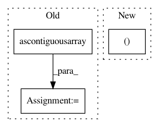

bea9126302e1d40f40f986d407f045147b2c621c,thinc/layers/bidirectional.py,,forward,#,12
Before Change
def forward(model, Xs, is_train):
l2r, r2l = model.layers
nO = model.get_dim("nO")
reverse_Xs = [l2r.ops.xp.ascontiguousarray(X[::-1]) for X in Xs]
l2r_Zs, bp_l2r_Zs = l2r(Xs, is_train)
r2l_Zs, bp_r2l_Zs = r2l(reverse_Xs, is_train)
def backprop(dZs, sgd=None):
After Change
Xs_rev = _reverse(model.ops, Xs)
l2r_Zs, bp_l2r_Zs = l2r(Xs, is_train)
r2l_Zs, bp_r2l_Zs = r2l(Xs_rev, is_train)
Zs, split = _concatenate(l2r_Zs, r2l_Zs)
def backprop(dZs, sgd=None):
d_l2r_Zs, d_r2l_Zs = split(dZs)
In pattern: SUPERPATTERN
Frequency: 3
Non-data size: 3
Instances
Project Name: explosion/thinc
Commit Name: bea9126302e1d40f40f986d407f045147b2c621c
Time: 2020-01-04
Author: honnibal+gh@gmail.com
File Name: thinc/layers/bidirectional.py
Class Name:
Method Name: forward
Project Name: utkuozbulak/pytorch-cnn-visualizations
Commit Name: ada2c33261b3273822557a7aff8bbf11d309fac1
Time: 2018-11-17
Author: utku.ozbulak@gmail.com
File Name: src/misc_functions.py
Class Name:
Method Name: preprocess_image
Project Name: explosion/thinc
Commit Name: 240e2a65feccf477b6a0b1d30dda10178b9c84f7
Time: 2020-01-13
Author: honnibal+gh@gmail.com
File Name: thinc/layers/uniqued.py
Class Name:
Method Name: forward